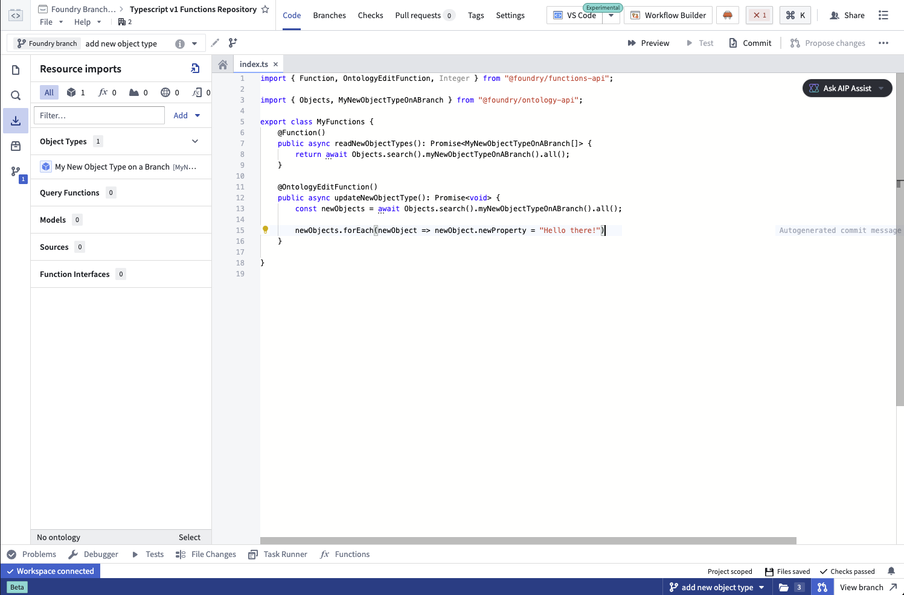
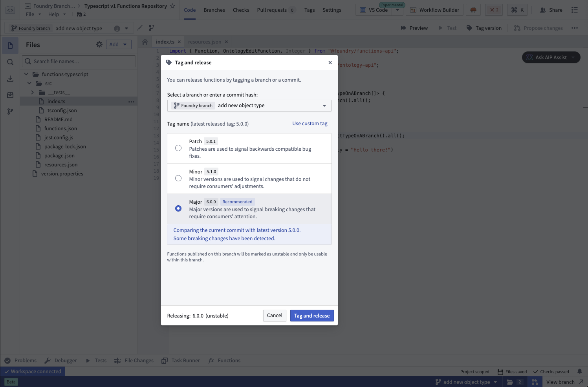
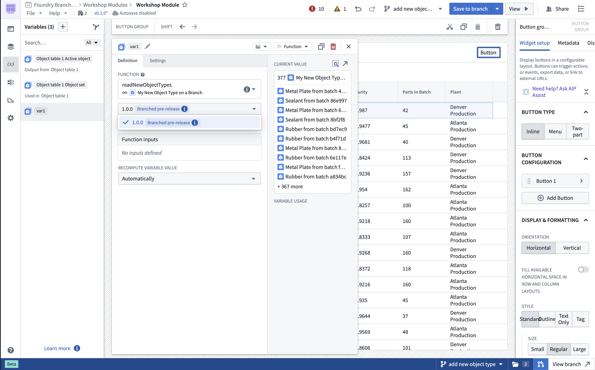
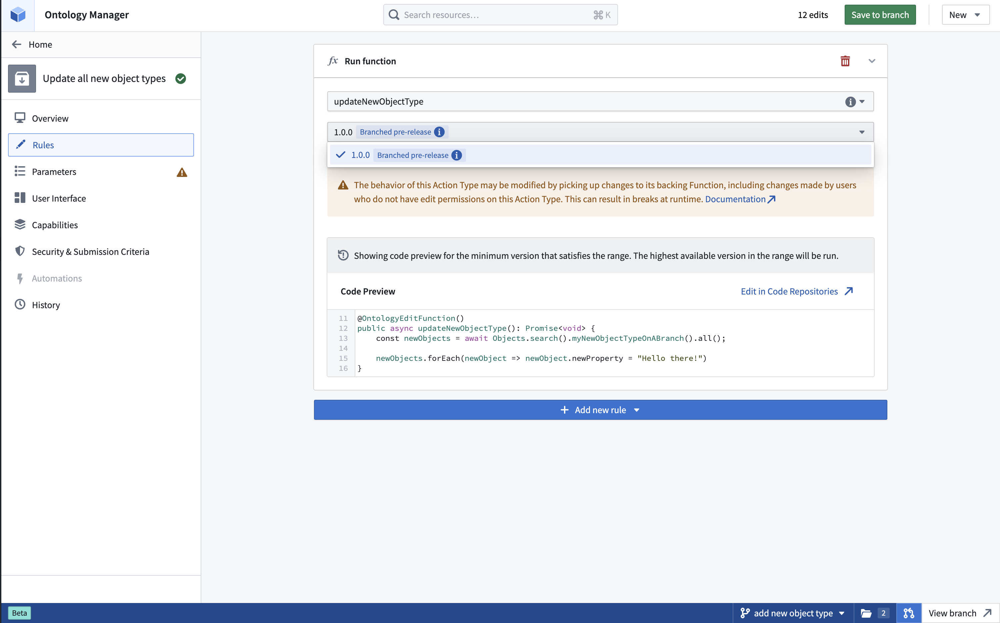
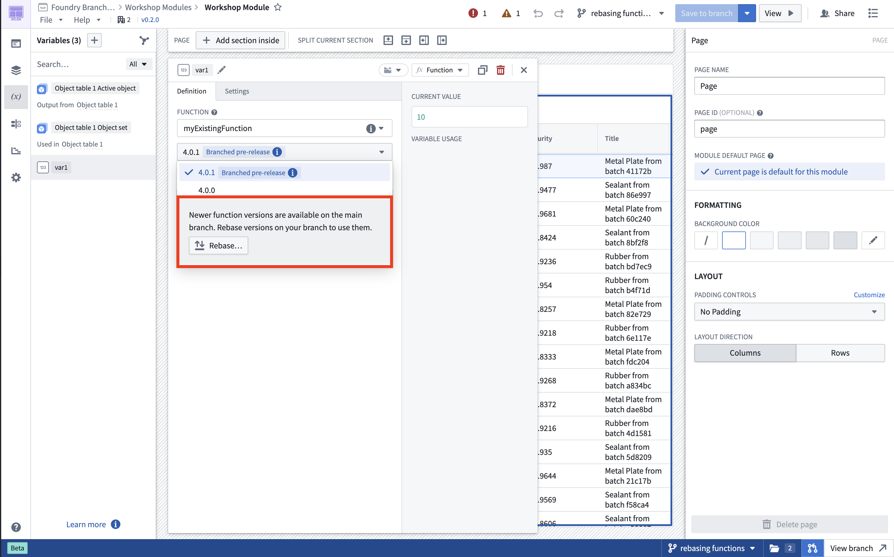

You can develop, publish, and consume functions on a global branch. This is currently supported for TypeScript v1, TypeScript v2, and AIP Logic functions.
:::callout{theme="warning"}
You cannot modify Python functions on a branch. To test one before merging into main, reference a specific function version on the branch. The function code can use only schemas that exist on main.
:::
:::callout{theme="neutral"}
To use Global Branching for TypeScript v1, upgrade your repository template to version 0.903.0 or higher of the functions-typescript child template or higher. Review the documentation on repository upgrades for instructions.
:::
:::callout{theme="neutral"}
To use Global Branching for TypeScript v2, upgrade your repository template to version 0.1299.0 or higher of the typescript-functions parent template or higher and enable a local Ontology SDK.
:::
You can develop a function that depends on changes made to resources on your global branch, such as newly created or modified ontology entities.

When you are ready, publish your function with a version target â the stable version published to main when the global branch merges. During development on your branch, the function is published as unstable preview versions.

Once you have successfully published your function on the branch, you can use the new function version on your branch in Workshop, AIP Logic, and function-backed actions. This function version is labeled with the Branched pre-release tag. Note that functions published on your branch will not be accessible from other branches, including main.


:::callout{theme="neutral"} It is currently not possible to depend on branched versions of query functions in TypeScript v1 repositories. :::
As you continue developing on your branch, you can continue publishing function versions to the same version target. As long as your version target remains the same, any resource using your function will automatically pull the latest published version. This lets you iterate quickly without manually updating function references after each publish.
If the version target on the branch changes, you must update all dependents of the function that were using the old version on the branch to use the new version target. This will also be displayed as a check.
When developing on a branch, you will not automatically receive newer function versions published to main. This prevents main development from disrupting your branch work. If newer versions are available on main, you will see notifications in function version selectors and Ontology Manager. You can then rebase your function versions to pull in all newer versions from main.

If your version target gets published to main while you are developing, you must select a new version target before merging. Once you do, update any dependents to use the new version target.
When merging your global branch, modified functions will be published on main with the stable version target. Resources using the version published on your branch will automatically start using the new stable version that was published on main as part of the merge.
:::callout{theme="warning"}
Foundry only merges your version target into main and does not merge other versions published on the branch. Those versions will not exist on main after your branch merges.
:::